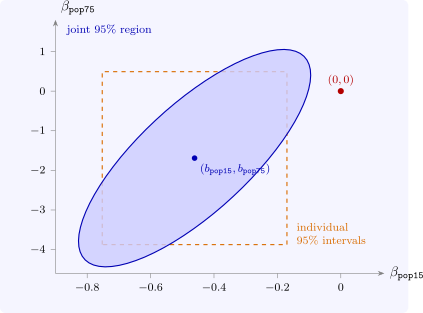

7.5 Confidence intervals and regions
A \(100(1 - \alpha )\%\) confidence interval for \(\beta _j\) is \(b_j \pm t_{\alpha /2,\,n-k}\operatorname {se}(b_j)\). Inverting the \(F\) test of Theorem 7.3.1 for \(q\) coefficients jointly gives a confidence region: \[ \Bigl \{\beta _0 : (Rb - \beta _0)'\bigl [s^2R(X'X)^{-1}R'\bigr ]^{-1}(Rb - \beta _0) \leq qF_{\alpha ,\ q,\ n-k}\Bigr \}, \] which for two coefficients is an ellipse centred at the estimates. Its tilt reflects the covariance of the two estimates. A pair of values can lie inside both individual intervals but outside the ellipse, or outside one interval but inside the ellipse. Joint hypotheses must be tested jointly, not by checking the individual intervals one at a time (Figure 9).
Example 7.5.1. A production function \(\log Q = \alpha + \beta _L\log L + \beta _K\log K + u\) is estimated from \(40\) observations, with \[ b_L = 0.7, \quad \operatorname {se}(b_L) = 0.102; \qquad b_K = 0.2, \quad \operatorname {se}(b_K) = 0.102 . \] Find \(95\%\) confidence intervals for \(\beta _L\) and \(\beta _K\), and use them to test \(\beta _L = 1\) and \(\beta _K = 0\) separately at the \(5\%\) level.
Solution. There are \(n - k = 40 - 3 = 37\) degrees of freedom and \(t_{0.025,37} = 2.026\), so each half-width is \(2.026 \times 0.102 = 0.207\): \[ \beta _L\colon \ 0.7 \pm 0.207 = (0.493,\ 0.907), \qquad \beta _K\colon \ 0.2 \pm 0.207 = (-0.007,\ 0.407) . \] A two-sided test at the \(5\%\) level rejects exactly the values outside the \(95\%\) interval. The value \(1\) lies outside the interval for \(\beta _L\), so \(\beta _L = 1\) is rejected: the output elasticity of labour is less than one. The value \(0\) lies (just) inside the interval for \(\beta _K\), so \(\beta _K = 0\) is not rejected at \(5\%\): capital is not significantly productive, although the evidence is borderline (\(t = 0.2/0.102 = 1.96\), against \(2.026\)).

Questions on this section
Stuck on something here? Ask below and it stays attached to this topic.